Figura 12-8: Truque 1 - Adicionando um número positivo e um negativo.
Figura 12-8: Truque 1 - Adicionando um número positivo e um negativo.
abs()
Este capítulo não apresenta um novo jogo, ao invés disso, revisa alguns conceitos matemáticos simples que usaremos no resto dos jogos nesse livro.
Quando você olha jogos 2D (tais como Tetris ou jogos antigos de Super Nintendo ou Sega Genesis) você pode ver que a maioria dos gráfcos na tela pode se mover à esquerda ou direita (a primeira dimensão) e, para cima e para baixo (a segunda dimensão, portando 2D). Para criarmos jogos que possuam objetos se movendo nas duas dimensões (como a tela bi-dimencional do computador), nós precisamos de um sistema que possa traduzir um lugar na tela em números inteiros que nosso programa possa lidar.
Aqui é onde o sistema de coordenadas Cartesianas entra. As coordenadas podem apontar para um ponto muito específico na tela, para que nosso programa possa manter controle das diferentes áreas dela.
Números negativos também são frequentemente utilizados com o sistema de coordenadas Cartesianas. A segunda metade desse capítulo irá explicar como nós podemos fazer cálculos com números negativos.
Você pode já conhecer o sistema de coordenadas Cartesianas e números negativos das aulas de matemática. Nesse caso, você pode de qualquer forma dar uma lida rápida nesse capítulo para relembrar esses assuntos.
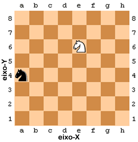 Figura 12-1: Um exemplo de um tabuleiro de xadrez com um cavaleiro preto em a, 3 e um cavaleiro branco em e, 6.
Um problema em muitos jogos é de como falar sobre pontos exatos no tabuleiro. Uma maneira comum de resolver isso é marcando cada linha e coluna em particular com uma letra e um número. A Figura 12-1 é um tabuleiro de xadrez que tem cada linha e coluna marcadas.
No xadrez, a peça do cavaleiro se parece com uma cabeça de cavalo. O cavaleiro branco está localizado no ponto e, 6 e o cavaleiro preto está localizado no ponto a, 4. Nós também podemos ver que todos os espaços na linha 7 e na coluna c estão vazios.
Uma grade com linhas e colunas identificadas por um rótulo como o tabuleiro de xadrez é um sistema de coordenadas Cartesianas. Utilizando um rótulo de linha e um de coluna nós podemos dar uma coordenada que é para um, e somente um espaço no tabuleiro. Isto pode realmente nos ajudar a descrever para um computador a localização exata que queremos. Se você já aprendeu sobre sistemas de coordenadas Cartesianas nas aulas de matemática, você pode saber que geralmente nós temos números para ambas, linhas e colunas. Isto é útil, porque caso contrário, depois da 26ª coluna nós esgotaríamos a quantidade de letras. Este tabuleiro se pareceria com a Figura 12.2.
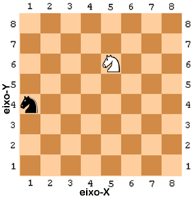 Figura 12-2: O mesmo tabuleiro de xadrez porém com coordenadas numéricas para ambas, linhas e colunas.
Os números indo da esquerda para a direita e descrevem as colunas são parte do eixo-X. Os números indo de cima para baixo e que descrevem as linhas são parte da coordenada-Y. Isto significa que o cavaleiro branco na figura anterior está localizado na coordenada 5, 6 (e não 6, 5). O cavaleiro preto está localizado na coordenada 1, 4 (e não 4, 1).
Repare que, para que o cavaleiro preto se mova para a posição do cavaleiro branco, o cavaleiro preto deve se mover dois espaços, e então quatro espaços para a direita. (Ou se mover quatro espaços à direita e então mais dois espaços). Mas nós não precisamos olhar para o tabuleiro para descobrir isso. Se nós sabemos que o cavaleiro branco está localizado em 5, 6 e o cavaleiro preto em 1, 4, então podemos somente usar a subtração para descobrir essa informação.
Subtraia as coordenadas-X do cavaleiro preto e do cavaleiro branco: 5 - 1 = 4. Isto significa que o cavaleiro preto tem que se mover ao longo do eixo-X por quatro espaços.
Subtraia as coordenadas-Y do cavaleiro preto e do cavaleiro branco: 6 - 4 = 2. Isto significa que o cavaleiro preto tem que se mover ao longo do eixo-Y por dois espaços.
Outro conceito que coordenadas Cartesianas usam é o de números negativos. Números negativos são números que são menores do que zero. Colocamos um sinal de menos na frente de um número para mostrar que ele é negativo. O número -1 é menor do que zero. E -2 é menor que -1. E -3 é menor que -2. Se você pensar em numéros regulares (chamados de números positivos) como iniciando em 1 e aumentando, você pode pensar em números negativos como iniciando em -1 e diminuindo. O número 0 em si não é positivo nem negativo. Nessa figura, você pode ver os números positivos aumentando para a direita e os números negativos diminuindo para a esquerda:
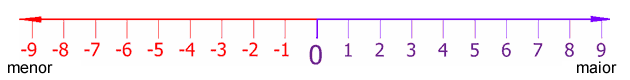 Figura 12-3: Uma reta numérica
A reta numérica é realmente útil para fazer substração e adição com números negativos. A expressão 4 + 3 pode ser pensada como o cavaleiro branco iniciando na posição 4 e se movendo 3 espaços para a direita (adicionar significa aumentar, que é para o lado direito).
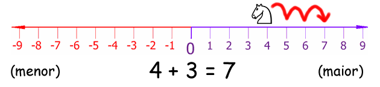 Figura 12-4: Movendo o cavaleiro branco para a direita aumenta na coordenada.
Como você pode ver, o cavaleiro branco acaba na posição 7. Isso faz sentido, porque 4 + 3 é 7.
A subtração pode ser feita movendo o cavaleiro branco para a esquerda. Subtrair significa diminuir, que é para o lado esquerdo. O cavaleiro branco iniciando na posição 4 e se movendo 6 espaços para a esquerda resultaria na expressão 4 - 6, como na Figura 12-5:
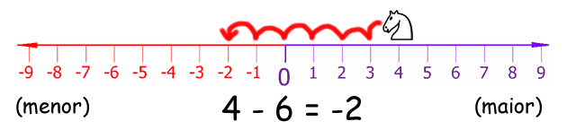 Figura 12-5: Movendo o cavaleiro branco para a esquerda diminui na coordenada.
O cavaleiro branco acaba na posição -2. Isso significa que 4 - 6 é igual a -2.
Se adicionamos ou subtraimos um número negativo, o cavaleiro branco se moveria para a direção oposta. Se você adiciona um número negativo, o cavaleiro se move para a esquerda. Se você subtrai um número negativo, o cavaleiro se move para a direita. A expressão -6 - -4 é igual a -2. O cavaleiro inicia em -6 e se move para a direita por 4 espaços. Repare que -6 - -4 possui o mesmo resultado que -6 + 4.
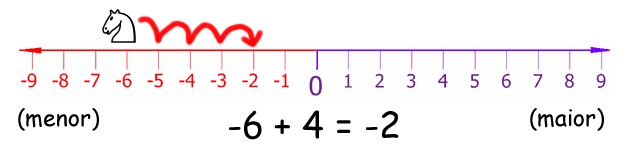 Figura 12-6: Mesmo se o cavaleiro branco inicia em uma coordenada negativa, movendo-o para a direita ainda aumenta na coordenada.
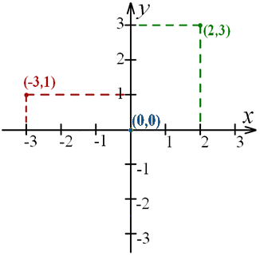 Figura 12-7: Colocando duas retas numéricas juntas cria um sistema de coordenadas Cartesianas.
A reta numérica é a mesma que o eixo-X. Se fizermos a reta numérica ir de cima para baixo, ao invés da esquerda para a direita, ela iria modelar o eixo-Y. Adicionando um número positivo (ou subtraindo de um número negativo) moveria o cavaleiro para cima na reta numérica, e subtraindo de um número positivo (ou adicionando um número negativo) moveria o cavaleiro para baixo na reta. A coordenada 0, 0 tem um nome especial: origem.
Subtraindo ou adicionando números negativos parece ser fácil quando você tem uma reta numérica na sua frente, mas pode ser fácil também quando você tem somente os números. Aqui estão três truques que você pode usar para tornar mais fáceis as avaliações dessas expressões.
O primeiro é se você está adicionando um número negativo, por exemplo; 4 + -2. Quando você vê um sinal de menos com um sinal de mais à esquerda, você pode substituí-lo por um sinal de menos. A resposta permanece a mesma, porque adicionar um valor negativo é o mesmo que subtrair um valor positivo. 4 + -2 e 4 - 2 ambos resultam em 2.
Figura 12-8: Truque 1 - Adicionando um número positivo e um negativo.
O segundo truque é se você está subtraindo um número negativo, por exemplo, 4 - -2. Quando você vê dois sinais de menos um ao lado do outro sem um número entre eles, eles podem combinar em um sinal de mais. O resultado permanece o mesmo, porque subtrair um valor negativo é o mesmo que adicionar um valor positivo.
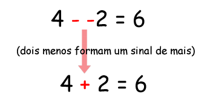 Figura 12-9: Truque 2 - Subtraindo um número positivo e um negativo.
Um terceiro truque é para lembrar que quando você adiciona dois números como 6 e 4, não importa em qual ordem eles estão. (Isto é chamado de propriedade comutativa da adição). Isso significa que 6 + 4 e 4 + 6 são ambos iguais ao mesmo valor, 10. Se você contar as caixas na figura abaixo, poderá ver que não importa qual ordem você tem os números para adicionar.
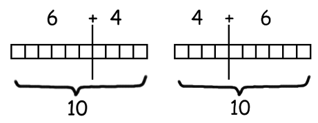 Figura 12-10: Truque 3 - A propriedade comutativa da adição.
Digamos que você está adicionando um número negativo e um positivo, como -6 + 8. Já que você está adicionando números, você pode mudar a ordem dos números sem alterar o resultado. -6 + 8 é o mesmo que 8 + -6. Porém, quando você vê 8 + -6, repara que o sinal de menos pode comer o sinal de mais à sua esquerda, resultando na expressão 8 - 6 = 2. Mas isso significa que -6 + 8 também é 2! Nós reorganizamos a expressão para obtermos o mesmo resultado, mas tornamos mais fácil para resolvê-la sem usar uma calculadora ou o computador.
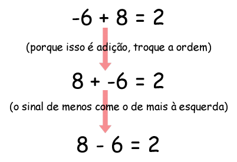 Figura 12-11: Usando nossos truques matemáticos juntos.
É claro, você sempre pode usar o interpretador interativo como uma calculadora para avaliar essas expressões. É ainda muito útil conhecer os três truques acima quando adicionar ou subtrair números negativos, afinal, você não estará todo o tempo em frente a um computador com Python instalado.
O valor absoluto de um número é o número sem o sinal de menos na frente dele. Isto significa que números positivos não mudam, mas números negativos se tornam positivos. Por exemplo, o valor absoluto de -4 é 4. O valor absoluto de -7 é 7. O valor absoluto de 5 (que é positivo) é simplesmente 5.
Podemos saber quão distantes das outras duas coisas estão em uma reta numérica obtendo o valor absoluto das suas diferenças. Imagine que o cavaleiro branco está na posição 4 e o cavaleiro preto na posição -2. Para descobrir a distância entre eles, você poderia achar a diferença subtraindo suas posições e obtendo o valor absoluto desse número.
Isso funciona não importando em que ordem os números estão. -2 - 4 (isso é, 2 negativo menos 4) é igual a -6, e o valor absoluto de -6 é 6. Contudo, 4 - -2 (ou seja, 4 menos 2 negativo) é 6, e seu valor absoluto é 6. Usar o valor absoluto da diferença é uma boa maneira de achar a distância entre dois pontos em uma reta numérica (ou eixo).
A função abs() pode ser usada para retornar o valor absoluto de um
inteiro. Como abs() é uma função embutida, você não precisa importar
nenhum módulo para poder usá-la. Passe um valor inteiro ou float e ela
irá retornar seu valor absoluto:
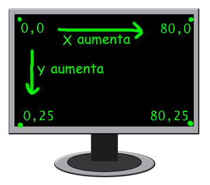 Figure 12-12: O sistema de coordenadas Cartesianas de um monitor de computador.
É comum que monitores de computador usem um sistema de coordenadas que têm origem (0, 0) no canto superior esquerdo da tela, e aumentam à medida que vão para baixo e à direita. Não há coordenadas negativas. Isso é devido a textos serem impressos iniciando no topo esquerdo, seguindo para a direita e para baixo. A maioria dos gráficos de computadores usam esse sistema de coordenadas, e vamos usá-lo nos nossos jogos. É também comum assumir que monitores podem exibir textos com 80 caracteres por linha e 25 caracteres por coluna (veja a Figura 12-12). Este costumava ser o tamanho máximo que monitores podiam suportar. Apesar dos monitores de hoje normalmente poderem exibir muito mais texto, nós não assumiremos que a tela do usuário é maior do que 80 por 25.
origin (0, 0) at the top left corner of the screen, which increases going down and to the right. There are no negative coordinates. This is because text is printed starting at the top left, and is printed going to the right and downwards. Most computer graphics use this coordinate system, and we will use it in our games. Also it is common to assume that monitors can display 80 text characters per row and 25 text characters per column (look at Figure 12-12). This used to be the maximum screen size that monitors could support. While today's monitors can usually display much more text, we will not assume that the user's screen is bigger than 80 by 25.
Isso não foi muita matemática para aprender para a programação. Na verdade, na maioria das vezes programar não requer entender muito de matemática. Até esse capítulo nós sobrevivemos somente com simples adições e multiplicaçõs.
Sistemas de coordenadas Cartesianas são necessárias para descrever exatamente onde em uma área bi-dimensional uma certa posição está. Coordenadas são formadas por dois números: a coordenada-X e a coordenada-Y. O eixo-X vai da esquerda para a direita, enquanto o eixo-Y de cima para baixo. Em uma tela de computador (e na maioria da programação de computadores), o eixo-X se inicia em 0 no lado esquerdo e aumenta para o lado direito. O eixo-Y se inicia em 0 no topo da tela e aumenta para baixo.
Os três truques que aprendemos nesse capítulo torna muito fácil adicionar números inteiros positivos e negativos. O primeiro truque é que o sinal de menos vai comer o sinal de mais à sua esquerda. O segundo é que dois sinais de menos juntos irão combinar em um sinal de mais. E o terceiro truque é que você pode mudar a posição dos números que você está adicionando. Isto é chamado de Propriedade Comutativa da Adição.
Para o resto do livro, nós iremos usar os conceitos aprendidos nesse capítulo em nosso jogos porque eles possuem áreas bi-dimencionais neles. Todos os jogos gráficos requerem o entendimento de como as coordenadas Cartesianas funcionam.